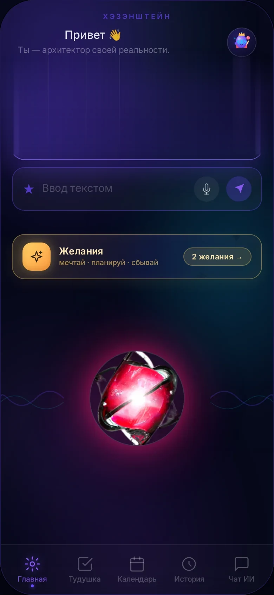

Есть особенное удовольствие в том, чтобы вычеркнуть дело. Приложение делает из этого маленький праздник.
Ты торжественно перечёркиваешь главный экран, рисуя символ Х, разлетаются искры — и получаешь ⚡ и Proof, что день прожит не зря.
За это растут уровни и стрики 🔥 — неделя без пропусков ценится дороже, чем одна героическая ночь.
Психологи зовут это «петлёй завершения» — мозг любит доводить до конца. Мы просто не мешаем ему это любить

Демо: жест Х — задача уходит, следующая сама выезжает в фокус